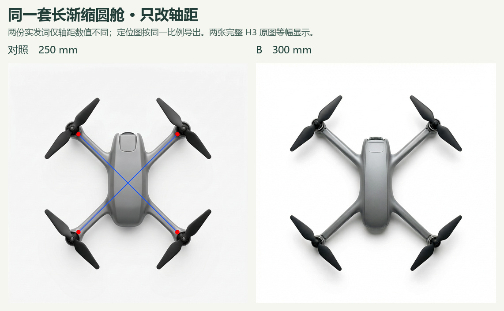
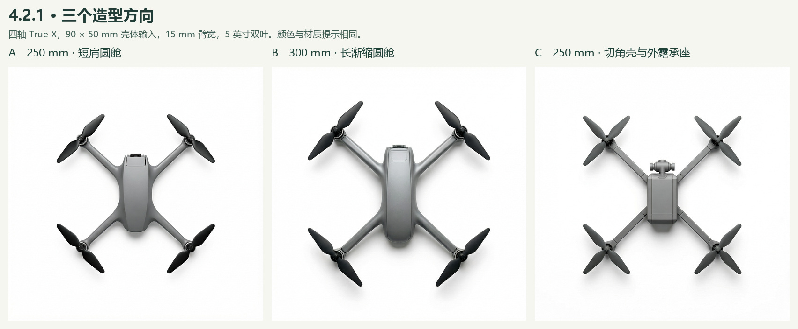
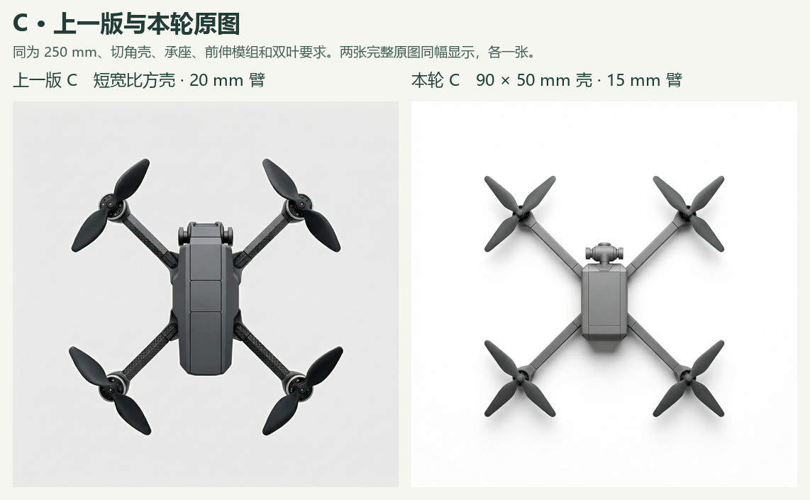

作者认可 B 的曲面过渡，并反馈“现在的 C 看起来没有刚刚的好”。四张 H3 开发原图均已保留；300 mm 的 B 在两组对照中共用。

同一套 B 规格，只在输入端将对角轴距从 250 mm 改为 300 mm，并让点线定位图随之移动。成图前排机械轴心横距约 476 和 512 px。左图留有定位红点和蓝线，轴心按机械中心读取。每档一张，知条件 AI 初读。

| 输入规格 | 顶视观察 |
|---|---|
| A 250 mm，圆舱短肩，内嵌鼻舱 | 肩部收向细臂，鼻端小段深色。与 B 同为光顺肩部。 |
| B 300 mm，圆舱长渐缩，内嵌鼻舱 | 轴间距拉开，肩面顺臂延伸，尾部收净。内嵌安装细节仅凭此视图难判。 |
| C 250 mm，切角方壳，承座横缝，前伸云台 | 相机模组凸出鼻缘，壳与臂有横接缝。四副桨均画成三叶。多道盖缝未确认。 |

旧图上能看到四副双叶、机身盖板分段及臂面纹理。两版同时改变了壳体规格、臂宽和色材措辞，单张对比不能确定哪项造成差异。作者尚未指定不满意的具体原因。